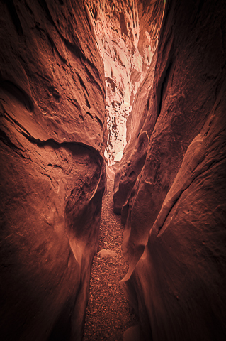

IR Photos of Little Wild Horse Canyon
Oct 17, 2021
Little Wild Horse is a classic slot canyon located in south-central Utah, near Goblin Valley. It is a popular hiking spot for families and youth groups. The main attraction is a long stretch of "narrows," where the canyon walls are so close you have to turn sideways to get through. The rock walls are sculpted and very beautiful.
There are two popular approaches to hiking here. Some people simply go into Little Wild Horse, hike as far as they feel comfortable and then return the way they came in. More adventurous people make a loop by hiking up Little Wild Horse and then crossing over and descending Bell Canyon. The loop hike totals about 8 miles, and is moderately strenuous.
These canyons are normally dry, although they may harbor pools of water during the spring and immediately after summer storms. If there are pools, hikers just wade through them - the water is usually only ankle-deep. Flash floods pose a risk to people hiking narrow canyons. Never enter a slot canyon if there is a significant chance of rain anywhere in the canyon's drainage area.
Infrared photography is a look into the invisible world. The human eye can see wavelengths from about 400nm-700nm (from purple to red); infrared is the light beyond 700nm. IR photography can be done with either infrared film, or a digital camera, and typically involves near infrared light in the 700nm to 1200nm range.